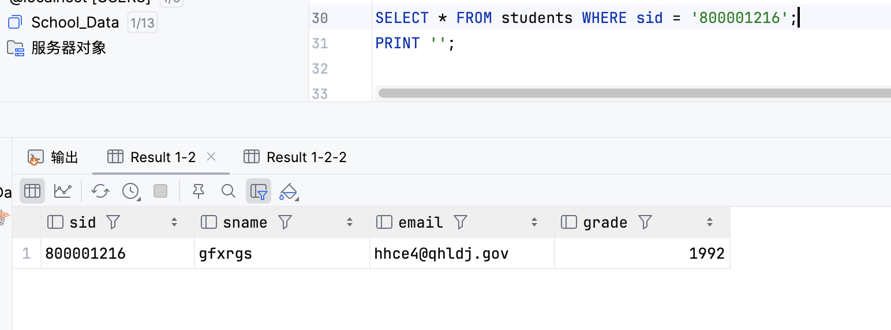
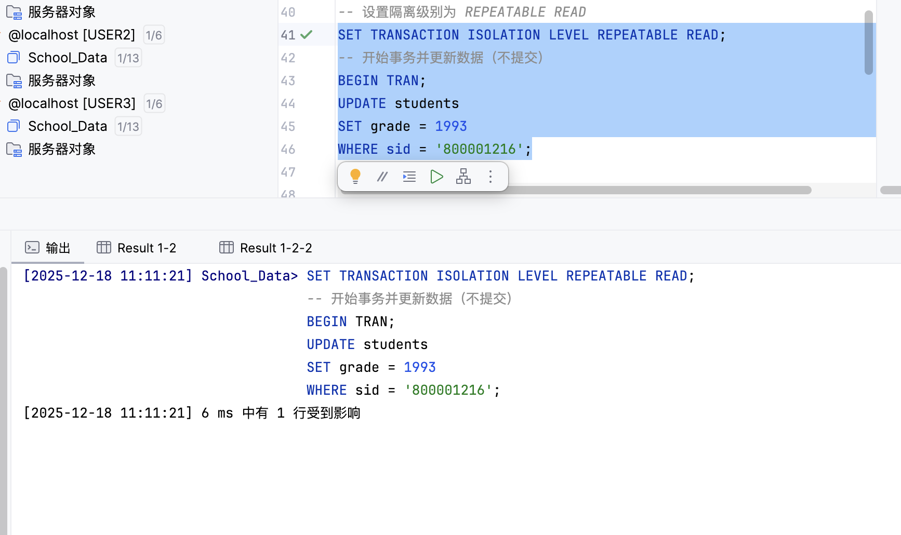
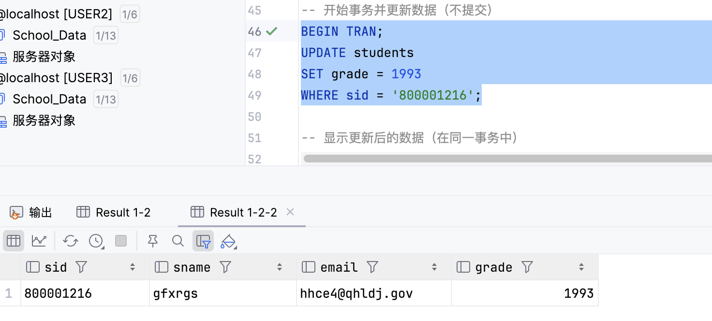
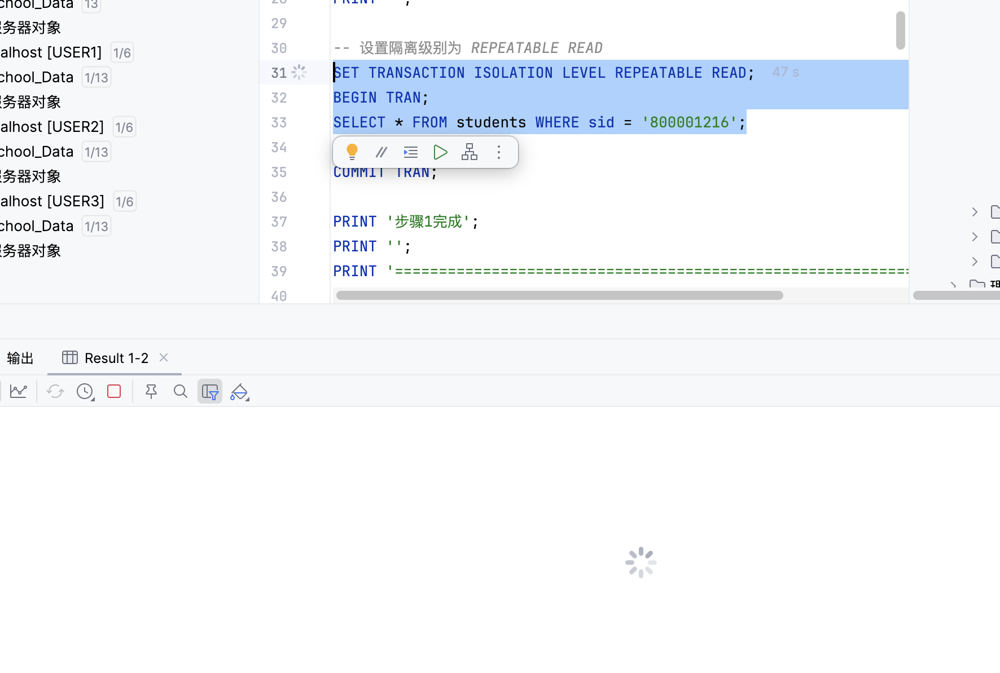
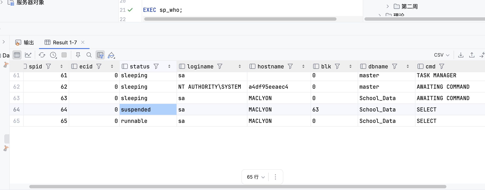
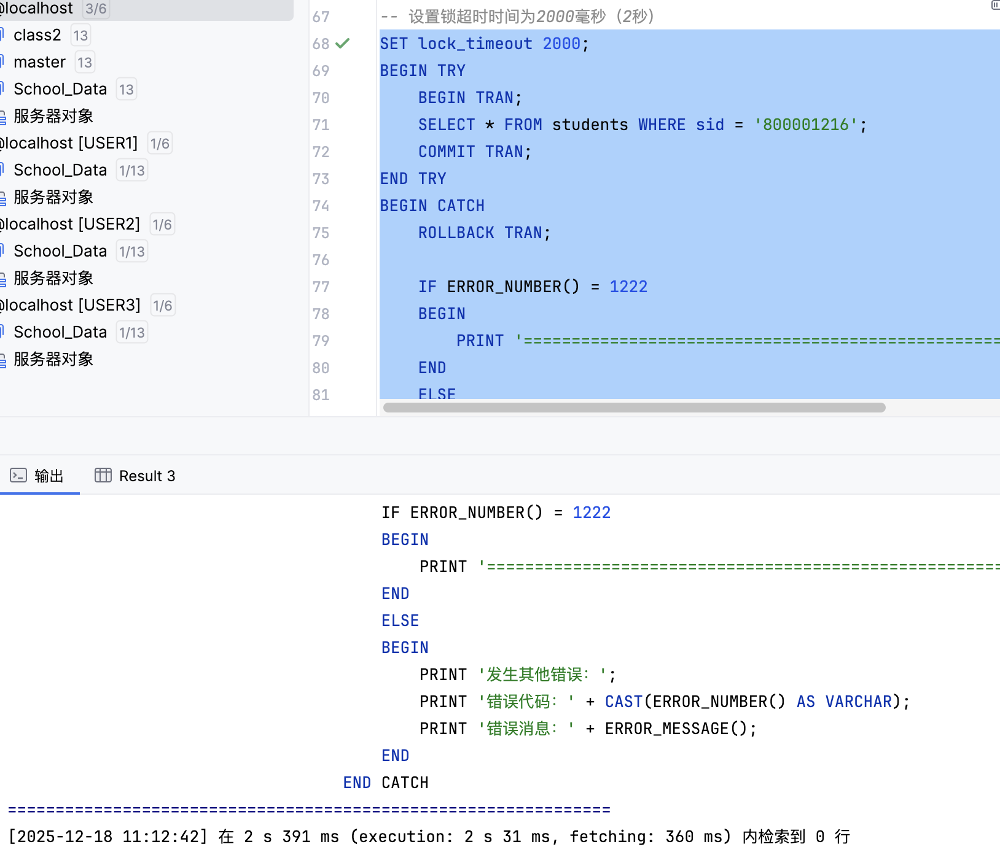
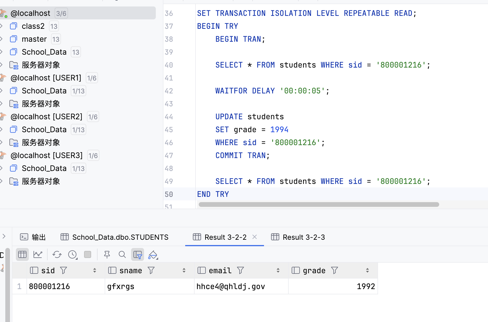
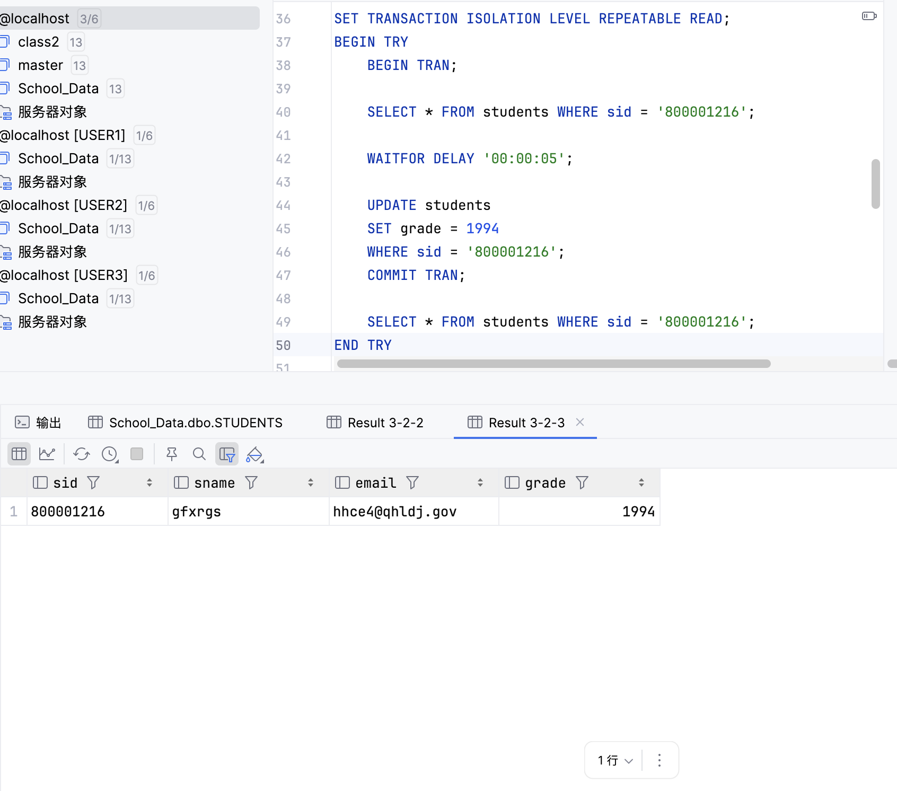
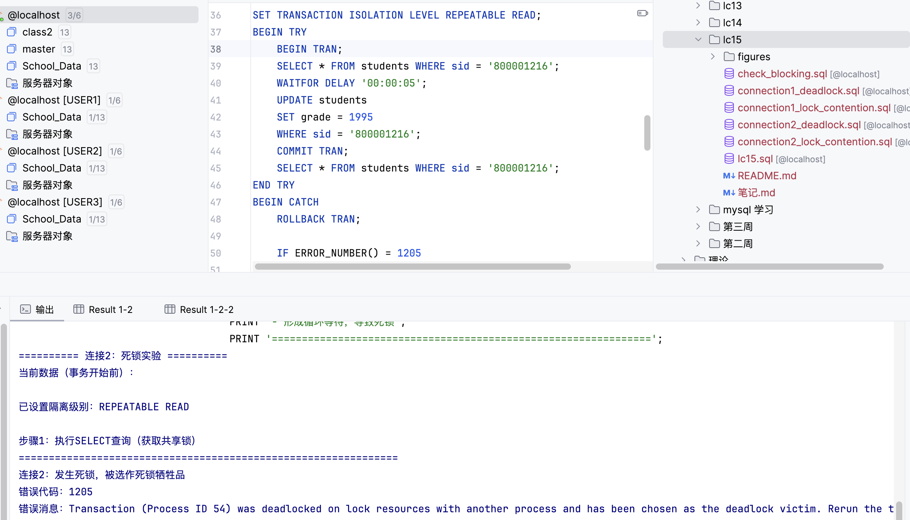

实验信息
- 实验名称: 锁争夺与死锁实验
- 实验日期: 2025-12-04
- 数据库: School_Data
- 实验目的: 学习理解SQL Server中的锁争夺（Lock Contention）和死锁（Deadlock）现象，掌握使用sp_who查看阻塞情况，使用lock_timeout解决永久等待问题，以及理解死锁的产生原因和处理方法
实验内容概述
本次实验主要包含以下内容：
- 在students表上演示锁争夺，通过sp_who查看阻塞的进程
- 通过设置lock_timeout解除锁争夺，避免永久等待
- 在students表上演示死锁现象
- 讨论如何避免死锁以及死锁的处理方法
环境准备
测试数据准备
实验使用以下测试学生数据：
- sid: 800001216
- sname: gfxrgs
- email: hhce4@qhldj.gov
- grade: 1992

图1：实验开始前，查看测试学生数据，grade为1992
实验1：锁争夺演示
实验目的
演示在REPEATABLE READ隔离级别下，一个连接更新数据但未提交时，另一个连接尝试读取相同数据时发生的锁争夺和阻塞现象。
实验步骤
1连接1：更新事务（不提交）
在第一个SQL Server连接中执行以下代码，更新数据但不提交事务，保持锁定状态：
SET TRANSACTION ISOLATION LEVEL REPEATABLE READ;
BEGIN TRAN;
UPDATE students
SET grade = 1993
WHERE sid = '800001216';
-- 注意：不执行 COMMIT 或 ROLLBACK，保持事务打开

图2：连接1执行UPDATE操作但不提交，事务保持锁定状态

图2-1：连接1在同一事务中查询更新后的数据，grade已变为1993
连接1已更新数据（grade = 1993），但事务未提交 在同一事务中查询可以看到更新后的值（grade = 1993） 数据已被锁定，其他连接无法读取或修改该数据
2连接2：查询事务（被阻塞）
在第二个SQL Server连接中执行以下代码，尝试查询相同数据：
SET TRANSACTION ISOLATION LEVEL REPEATABLE READ;
BEGIN TRAN;
SELECT *
FROM students
WHERE sid = '800001216';
COMMIT TRAN;

图3：连接2执行SELECT查询，被连接1阻塞，一直等待（没有设置timeout时）
连接2的查询被阻塞，一直等待连接1释放锁 查询无法完成，处于挂起（suspended）状态
结果分析
- 锁争夺机制：连接1执行UPDATE操作后获取了排他锁（Exclusive Lock），在事务未提交前，该锁一直保持
- REPEATABLE READ隔离级别：在此隔离级别下，已读取的数据上的共享锁在事务完成前不会释放，已修改的数据上的排他锁也会保持到事务结束
- 阻塞现象：连接2尝试获取共享锁读取数据，但连接1持有排他锁，导致连接2被阻塞，无法继续执行
- 永久等待问题：如果连接1一直不提交或回滚事务，连接2会永久等待，这是需要解决的问题
3查看阻塞情况：使用 sp_who
在任意连接中执行以下代码，查看进程阻塞情况：
EXEC sp_who;

图4：使用sp_who查看阻塞情况，可以看到被阻塞的进程状态为suspended，blk列显示阻塞该进程的进程ID
从sp_who的结果可以看到： - 被阻塞的进程状态为"suspended"（挂起） - blk列显示阻塞该进程的进程ID（例如：进程64被进程63阻塞） - 被阻塞的进程cmd为"SELECT"，说明正在执行查询操作
4使用 lock_timeout 解决阻塞
在连接2中取消之前的查询，然后执行以下代码，设置锁超时时间：
SET TRANSACTION ISOLATION LEVEL REPEATABLE READ;
SET lock_timeout 2000; -- 设置超时时间为2000毫秒（2秒）
BEGIN TRY
BEGIN TRAN;
SELECT *
FROM students
WHERE sid = '800001216';
COMMIT TRAN;
END TRY
BEGIN CATCH
ROLLBACK TRAN;
IF ERROR_NUMBER() = 1222
BEGIN
PRINT '错误1222：已超过了锁请求超时时段';
END
END CATCH

图4-1：连接2设置lock_timeout后，查询在2秒31毫秒内结束，没有被永久阻塞
错误1222：已超过了锁请求超时时段 （The lock request timeout period has been exceeded.） 查询在2秒31毫秒内结束，没有被永久阻塞
设置lock_timeout后，即使连接1的事务仍在运行，连接2的查询也不会永久等待 在2秒31毫秒后，锁定管理器自动解除锁的争夺，返回错误1222 这证明了lock_timeout有效避免了永久等待的问题
结果分析
- lock_timeout的作用：设置锁定超时时间间隔，超时后锁定管理器将自动解除锁的争夺
- 错误代码1222：当系统发生锁争夺时，如果有事务超时，SQL Server向用户返回错误号1222
- 避免永久等待：通过设置合理的lock_timeout值，可以避免事务永久等待的问题，提高系统的响应性
- 应用程序处理：在应用程序中应该捕获错误1222，并根据业务需求决定是否重试或采取其他措施
实验2：死锁演示
实验目的
演示两个连接同时执行相同事务时发生的死锁现象，理解死锁的产生原因和SQL Server的死锁检测机制。
实验步骤
1准备阶段：查看初始数据
在连接1中执行查询，查看当前数据：

图5：连接1在事务开始前查询数据，grade为1992
2同时执行死锁演示代码
在连接1和连接2中同时（或几乎同时）执行以下代码：
SET TRANSACTION ISOLATION LEVEL REPEATABLE READ;
BEGIN TRY
BEGIN TRAN;
-- 获取共享锁
SELECT *
FROM students
WHERE sid = '800001216';
-- 延时5秒，为死锁创造条件
WAITFOR DELAY '00:00:05';
-- 尝试转换为排他锁
-- 连接1更新为1994，连接2更新为1995
UPDATE students
SET grade = 1994 -- 连接1使用1994，连接2使用1995
WHERE sid = '800001216';
COMMIT TRAN;
SELECT *
FROM students
WHERE sid = '800001216';
END TRY
BEGIN CATCH
ROLLBACK TRAN;
IF ERROR_NUMBER() = 1205
BEGIN
PRINT '发生死锁，被选作死锁牺牲品';
END
END CATCH
3连接1执行成功

图6：连接1执行成功，成功更新数据，grade变为1994
连接1：事务执行成功！ 成功更新数据：grade = 1994 事务正常提交
4连接2被选作死锁牺牲品

图7：连接2发生死锁，被选作死锁牺牲品，返回错误1205，事务自动回滚
连接2：发生死锁，被选作死锁牺牲品
错误代码：1205
错误消息：Transaction (Process ID XX) was deadlocked on lock resources
with another process and has been chosen as the deadlock victim.
Please rerun the transaction.
死锁产生原因分析
- 阶段1：获取共享锁：两个连接都通过SELECT语句获取共享锁（Shared Lock）在sid='800001216'的记录上
- 阶段2：尝试升级为排他锁：两个连接都尝试通过UPDATE语句将共享锁升级为排他锁（Exclusive Lock）
- 阶段3：循环等待：由于REPEATABLE READ隔离级别，共享锁在事务完成前不能释放。连接1等待连接2释放共享锁，连接2等待连接1释放共享锁，形成循环等待
- 阶段4：死锁检测：SQL Server检测到死锁，选择一个事务作为"死锁牺牲品"（Deadlock Victim）并终止
- 阶段5：牺牲品处理：牺牲品事务被自动回滚，返回错误1205；另一个事务继续执行并成功提交
结果分析
- 死锁检测机制：SQL Server自动检测死锁，通常选择回滚代价较小的事务作为牺牲品
- 错误代码1205：当发生死锁时，如果有牺牲事务，SQL Server向用户返回错误号1205
- 事务回滚：死锁牺牲品的事务会被自动回滚，保证数据一致性
- 应用程序处理：在应用程序中应该捕获错误1205，并自动重新提交事务
- 数据一致性：成功的事务会正常提交并更新数据，失败的事务会回滚，保证数据的一致性
如何避免死锁以及死锁的处理方法
避免死锁的策略
- 统一资源访问顺序：所有事务按照相同的顺序访问资源。例如，总是先访问students表，再访问teachers表，避免不同事务以相反顺序访问相同资源
- 减少事务持有锁的时间：尽快提交或回滚事务，避免在事务中执行长时间操作，将长事务拆分为多个短事务
- 使用较低的隔离级别：在满足业务需求的前提下，使用较低的隔离级别，较低的隔离级别可以减少锁的持有时间
- 使用锁超时：设置合理的lock_timeout值，避免事务永久等待
- 避免用户交互：不要在事务中等待用户输入，用户交互会延长锁的持有时间
死锁处理方法
错误代码识别
| 错误代码 | 错误类型 | 说明 |
|---|---|---|
| 1222 | 锁超时 | 当系统发生锁争夺时，如果有事务超时，SQL Server向用户返回错误号1222 |
| 1205 | 死锁 | 当发生死锁时，如果有牺牲事务，SQL Server向用户返回错误号1205 |
应用程序中的错误处理
在应用时，需要在应用程序中处理锁争夺与死锁，通过在错误处理器中捕获消息1222或1205，然后让应用自动重新提交事务。
BEGIN TRY
BEGIN TRAN;
-- 执行数据库操作
UPDATE students
SET grade = 1995
WHERE sid = '800001216';
COMMIT TRAN;
END TRY
BEGIN CATCH
IF ERROR_NUMBER() = 1222 OR ERROR_NUMBER() = 1205
BEGIN
-- 锁超时或死锁，自动重试
ROLLBACK TRAN;
PRINT '发生锁超时或死锁，正在重试...';
-- 重新提交事务逻辑
END
ELSE
BEGIN
-- 其他错误处理
ROLLBACK TRAN;
PRINT '错误：' + ERROR_MESSAGE();
END
END CATCH
锁的类型和兼容性
锁的兼容性矩阵
| 锁类型 | 共享锁(S) | 排他锁(X) | 更新锁(U) |
|---|---|---|---|
| 共享锁(S) | ✅ 兼容 | ❌ 不兼容 | ✅ 兼容 |
| 排他锁(X) | ❌ 不兼容 | ❌ 不兼容 | ❌ 不兼容 |
| 更新锁(U) | ✅ 兼容 | ❌ 不兼容 | ❌ 不兼容 |
锁的升级过程
在REPEATABLE READ隔离级别下，UPDATE操作通常经历以下锁升级过程：
- 共享锁（Shared Lock）：读取数据时获取
- 更新锁（Update Lock）：准备更新时尝试升级
- 排他锁（Exclusive Lock）：实际执行更新时获取
实验总结
主要知识点
- 锁争夺（Lock Contention）：多个事务同时请求同一资源的锁会导致阻塞。可以通过sp_who查看阻塞关系，使用lock_timeout可以避免永久等待。
- REPEATABLE READ隔离级别：在事务完成前，已读取的数据上的共享锁不会释放，已修改的数据上的排他锁也会保持到事务结束。这保证了可重复读，但也增加了死锁的可能性。
- sp_who命令：用于查看当前SQL Server进程和会话信息。blk列显示阻塞关系，status列显示进程状态（suspended表示被阻塞）。
- lock_timeout：设置锁定超时时间间隔（单位：毫秒）。超时后，锁定管理器将自动解除锁的争夺，返回错误1222，避免事务永久等待。
- 死锁（Deadlock）：两个或多个事务相互等待对方释放锁，形成循环等待。SQL Server自动检测并选择一个牺牲品，牺牲品事务返回错误1205并回滚。
- 错误处理：错误1222表示锁超时，错误1205表示死锁。在应用程序中应该捕获这些错误并自动重试。
- 锁的类型：共享锁（S）用于读取，排他锁（X）用于修改，更新锁（U）用于准备更新。不同锁类型之间存在兼容性关系。
避免死锁的最佳实践
- 统一资源访问顺序：所有事务按照相同的顺序访问资源，避免循环等待
- 减少事务持有锁的时间：尽快提交或回滚事务，避免长事务
- 设置合理的锁超时时间：使用lock_timeout避免永久等待
- 根据业务需求选择合适的隔离级别：在满足数据一致性要求的前提下，使用较低的隔离级别可以提高并发性能
- 在应用程序中处理错误：捕获错误1222和1205，实现自动重试机制
实验心得
通过本次实验，我深入了解了数据库锁机制的工作原理。在REPEATABLE READ隔离级别下，锁的持续时间较长，容易引发锁竞争甚至死锁。实验中我们验证了使用sp_who查看阻塞情况以及通过设置lock_timeout避免永久等待的方法。
死锁问题是多用户数据库系统中常见的现象，特别是在高并发场景下。SQL Server能自动检测死锁并选择牺牲品回滚，但这并不意味着应用程序可以忽略对这类问题的处理。在实际开发中，我们需要在应用程序层面妥善处理错误1205和1222，实现自动重试机制。
为了提高系统性能和稳定性，应该遵循一些最佳实践：统一访问资源的顺序、减少事务执行时间、合理设置隔离级别等。这些经验对于设计高并发数据库应用非常有价值。